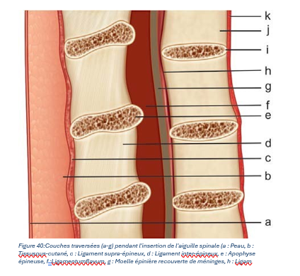

La ponction lombaire est un prélèvement de liquide céphalo-rachidien (LCR) au niveau de l’espace sous-arachnoïdien lombaire à but diagnostique et/ou thérapeutique, en insérant une aiguille entre les processus épineux de deux vertèbres lombaires adjacentes.
C’est un acte invasif, fréquemment réalisé par tout médecin en particulier dans les services d’urgences.
La ponction lombaire (PL) est à risque d’événements indésirables et d’échecs, dont la majorité serait évitable par le respect des indications et des contre-indications ainsi que la maîtrise de la technique de ponction et la bonne connaissance des repères anatomiques.
Toute une gamme d’aiguilles de différents types et de différentes dimensions est disponible pour les ponctions lombaires. Le modèle le plus couramment utilisé est une aiguille tranchante de trois pouces de calibre 22 Gauge.
Les aiguilles recommandées pour la ponction lombaire sont les aiguilles atraumatiques, dont l’extrémité conique n’est pas un biseau tranchant. Les aiguilles de Sprotte ont une pointe ogivale ; les aiguilles de Whitacre ont une pointe crayon. L’orifice est décalé en arrière de l’extrémité de l’aiguille.
Un introducteur court est fourni avec les aiguilles atraumatiques qui, utilisées seules, franchissent mal la peau. La ponction est réalisée dans un premier temps avec l’introducteur court ; l’aiguille de ponction lombaire est secondairement introduite à travers celui-ci.
Les aiguilles traditionnelles de Quincke, à biseau tranchant et orifice terminal, dites traumatiques, ne sont plus recommandées, responsables d’une incidence élevée d’effets indésirables.
La procédure de ponction lombaire nécessite une connaissance approfondie de l'anatomie fonctionnelle de la colonne vertébrale, de la moelle épinière et des nerfs rachidiens ainsi que de leurs marques de surface. La colonne vertébrale est composée de 33 vertèbres : sept segments cervicaux, douze segments thoraciques, cinq segments lombaires, cinq segments sacrés et quatre segments coccygiens. La partie du rachis concernée lors de la ponction lombaire est la vertèbre lombaire, qui forme avec les autres vertèbres une structure creuse en forme d'anneau pour accueillir et fournir une enceinte protectrice à la moelle épinière. L'anneau est formé antérieurement par le corps vertébral, latéralement par les pédicules et les apophyses transverses, et postérieurement par la lame et les apophyses épineuses.
La moelle épinière se trouve à l'intérieur du canal rachidien et est recouverte par trois couches ou trois couches ou membranes (méninges), à savoir la dure-mère, l’arachnoïde et la pie-mère. La dure-mère est la couche la plus externe, suivie par l’arachnoïde et la pie-mère.
L’espace situé entre la pie-mère et l’arachnoïde est connu sous le nom d'espace sous- arachnoïdien qui contient le LCR.
En outre, lorsque l'aiguille pénètre dans l'espace sous-arachnoïdien, elle rencontre les ligaments suivants : le ligament supra-épineux (qui relie la pointe des apophyses épineuses), le ligament inter-épineux (qui relie le corps des apophyses épineuses), et le ligamentumflavum (qui maintient les lamelles ensemble).
S'agissant d'une procédure à l'aveugle, on ne peut ignorer l'importance des repères de surface du patient. La ligne joignant les apophyses épineuses de la colonne vertébrale constitue la ligne médiane et sert de référence. Les apophyses épineuses de la colonne lombaires sont soit horizontales, soit légèrement inclinées en direction caudale ce qui nécessite une légère angulation céphalique de l'insertion de l'aiguille de ponction lombaire.
La ligne joignant les points les plus élevés des deux crêtes iliaques (ligne de Tuffier) passe par l'espace intermédiaire entre la quatrième et la cinquième vertèbre lombaire. Ce site constitue un repère anatomique majeur pour la ponction lombaire. Comme la moelle épinière se termine au niveau L1 ou L2, il est prudent d'éviter d'insérer l'aiguille au niveau ou au-dessus de ces espaces intermédiaires ou au-dessus de ces espaces intermédiaires, ce qui fait de L3-L4 et L2-L3 les espaces intermédiaires préférés pour l'insertion de l'aiguille.
• Suspicion d’infection du système nerveux central (bactérienne, virale, parasitaire) ;
• Survenue d’une céphalée brutale et/ou atypique (hémorragie méningée, thrombophlébite, dissection vasculaire, etc.) ;
• Suspicion d’une méningite carcinomateuse ou d’un syndrome paranéoplasique ;
• Bilan de maladies inflammatoires affectant le système nerveux central (sclérose en plaques, sarcoïdose, vascularite, encéphalite auto-immune, etc.) ;
• Bilan d’une neuropathie aiguë ou chronique (syndrome de Guillain-Barré, neuropathie périphérique, etc.) ;
• Maladies neurodégénératives (maladie d’Alzheimer, sclérose latérale amyotrophique, maladie à corps de Lewy, etc.) ;
• Mesure de pression du liquide cérébro-spinal (LCS) en cas de suspicion de troubles de la cinétique du LCS (hydrocéphalie à pression normale, hypertension intracrânienne idiopathique).
• Ponction lombaire évacuatrice : hydrocéphalie à pression normale, après interventions neurochirurgicales ;
• Rachianesthésie ;
• Traitement médicamenteux intrathécal (cytostatique, antibiotique)
• Présence de symptômes ou de signes évoquant une élévation de la pression intracrânienne, tels qu’une altération rapide du niveau de conscience, des signes de localisation neurologique, des crises convulsives tonicocloniques ou partielles, un œdème papillaire au fond d’œil. Plusieurs études ont montré la nécessité de réaliser préalablement un scanner cérébral dans ces situations.
• Infection locale au point de ponction.
• Troubles de la crase :
– Thrombocytes < 50 G/l.
– INR ≥1,5.
– Temps de saignement >7 min (ni l’acide acétylsalicylique, ni le clopidogrel, ni leur combinaison ne contre-indiquent une PL).
• Refus explicite ou présumé par le patient.
La PL est parfois responsable d’effets indésirables : syndrome post-PL (syndrome d’hypotension intracrânienne), hématomes, infections, douleurs lombaires, voire paraplégie ou décès de manière très exceptionnelle.
Le syndrome post-PL, secondaire à une fuite persistante de LCS, se caractérise par une céphalée orthostatique. Apparaissant habituellement dans les 2 à 4 jours après une PL (mais parfois plus tardive), elle est apyrétique, partiellement ou totalement soulagée par le décubitus dorsal.
L’incidence du syndrome post-PL peut être minorée par l’application de mesures simples prenant compte
• De la taille de l’aiguille : il a été démontré une corrélation entre la taille de l’aiguille et l’incidence du syndrome post-PL. Des aiguilles de taille 22G (0,7 mm) devraient généralement être utilisées sauf en cas de conditions anatomiques difficiles.
• De l’orientation de l’aiguille : si on décide d’utiliser une aiguille traumatique, le biseau doit être orienté en direction cranio-caudale de façon à « écarter » les fibres durales plutôt que de façon à les sectionner
• Du type d’aiguille : les aiguilles atraumatiques ont montré une diminution de l’incidence du syndrome post-PL par rapport aux aiguilles en biseau.
Les hématomes sont très exceptionnels. Ils peuvent être périmédullaires ou intracrâniens. Ils sont favorisés par les troubles de la coagulation, les traitements modifiant l’hémostase et les ponctions multiples.
Quelle que soit la localisation, il s’agit d’une urgence diagnostique et thérapeutique qui nécessite une imagerie et un avis spécialisé.
La complication la plus grave est la survenue d’un engagement cérébral consécutif à une hypertension intracrânienne, d’où la nécessité de ne pas réaliser ce geste en cas d’aggravation de l’état de conscience, des localisations neurologiques ou des crises convulsives. Cet engagement cérébral est rapidement responsable d’un arrêt cardio-respiratoire (pendant ou après la ponction lombaire).
Exceptionnelles et liées au non-respect des règles d’asepsie, elles peuvent se manifester sous forme de méningite, d’abcès au point de ponction, de spondylodiscite, etc.
Possibles après PL, elles sont habituellement banales.
Après une PL, l’apparition de signes cliniques nouveaux doit conduire à une prise en charge diagnostique et thérapeutique en urgence.
Ces signes d’alerte sont les suivants :
o Fièvre ;
o Signes neurologiques (syndrome complet ou incomplet de la queue-de-cheval, diplopie, déficit sensitif et/ou moteur, trouble de conscience, confusion, crise d’épilepsie, coma, etc.);
o Modification du caractère postural de la céphalée post-PL.
La PL doit être réalisée dans le cadre d’une hospitalisation (la réalisation de la PL ne justifie pas, à elle seule, une hospitalisation de plus de 24 heures).
Friction des mains : PHA
Habillage :
- Operateur : Masque chirurgical + gants stériles
- Aide : masque chirurgical + gants propres
Matériel pour la ponction :
- Aiguille à ponction lombaire (atraumatique)
- Tubes stériles pour LCR numérotés à l’avance dans l’ordre d’utilisation afin de pouvoir faire la différence entre piqure vasculaire accidentelle et hémorragie méningée si le liquide recueilli est sanglant.
- Champ stérile
- Antiseptique en solution moussante
- Antiseptique iodée
- Antiseptique à base d’alcool isopropylique ou de Chlorhexidine
- Compresses stériles - Eau stérile
- Conteneur à OPCT, sacs à ordures ménagères et sacs à DASRI
- Pansement stérile
Le bon positionnement du patient est essentiel pour réussir ce geste :
• En décubitus latéral (chien de fusil) : mettre le patient le plus possible en position fœtale (jambes qui touchent le thorax et tête pliée en avant), les épaules verticales. Un coussin sous la tête (alignement de la colonne) et un entre les genoux (confort) sont recommandés.
• Position assis au bord du lit, jambes pendantes ou assis au bord du lit, pieds soutenus et thorax sur les genoux. Cette position facilite le repérage du point d’insertion de l’aiguille mais expose à des réactions vagales au moment de la ponction et ne permet pas la mesure de la pression d’ouverture.
Le choix de la position assise ou allongée est laissé à l’appréciation du médecin et du patient.
Les niveaux corrects de ponction sont les espaces interépineux L3-L4, L4-L5 et L5-S1.
Chez la plupart des patients, il est facile de palper la partie postérieure des crêtes iliaques. Une ligne joignant les rebords supérieurs de la partie postérieure des crêtes iliaques traverse l’apophyse épineuse de L4. Le point médian de l’espace interépineux L4-L5 est localisé comme site d’insertion de l’aiguille. Si l’aiguille ne peut être introduite à cet endroit, une tentative est faite à l’espace supérieur.
En cas de difficulté, la PL peut être réalisée sous imagerie (radioscopie, échographie).
Le site est nettoyé préalablement à l’eau savonneuse ou à l’aide d’une solution moussante iodée (sauf en présence d’une allergie à l’iode). Sur la peau propre et séchée, un antiseptique iodé est appliqué en mouvements circulaires, en commençant au point prévu d’insertion de l’aiguille et en englobant les espaces interépineux sus et sous-jacent. La solution est appliquée au moins trois fois. La dernière application de solution antiseptique est suivie de l’application d’une solution à base d’alcool isopropylique ou de Chlorhexidine afin d’enlever la solution iodée. En effet, l’introduction par mégarde d’iode dans l’espace sous-arachnoïdien peut provoquer une arachnoïdite irritative.
La pose d’un patch d’anesthésique local peut être proposée au patient en dehors de l’urgence (délai d’1 heure).
Dans les cas prévisibles de ponction difficile, une anesthésie locale peut être envisagée.
L’aiguille à ponction est vérifiée afin de s’assurer que le mandrin entre et sort facilement de celle-ci. Les repères sont appréciés une ultime fois. Le patient est prévenu au moment de l’insertion afin qu’il ne bouge pas.
L’aiguille est introduite avec un angle d’environ 10° en direction céphalique. Elle glisse ensuite jusqu’à ce que la résistance se relâche soudainement, signifiant que la dure-mère a été franchie. Le mandrin est alors retiré ; il faut attendre deux secondes pour que le liquide céphalorachidien (LCR) commence à s’écouler. S’il n’y a aucun reflux de LCR, l’aiguille est avancée d’un ou deux millimètres à la fois, en prenant soin de vérifier à chaque avancée si le LCR s’écoule. Si la pointe de l’aiguille rencontre un relief osseux, elle doit être retirée en sous-cutané puis réintroduite après avoir vérifié la direction et la posture du patient.
Procéder à la récolte du LCR dans les différents tubes à analyses (typiquement trois ou quatre). Les tubes auront été préalablement numérotés : le premier tube sera utilisé pour la biochimie, le deuxième pour la bactériologie et le troisième pour la répartition cellulaire (ne pas utiliser les premiers tubes pour éviter la présence de sang traumatique suite à la ponction, ce quipourrait fausser les résultats). Eventuellement utiliser un quatrième tube pour la cytologie ou pour d’autres analyses spécifiques. En cas de ponction diagnostique, retirer environ 12-14 ml de LCR. En cas de ponction évacuatrice, retirer entre 40 et 50 ml.
A la fin de la récolte, le mandrin est replacé entièrement dans l’aiguille à ponction avant le retrait de cette dernière. Une pression est appliquée sur le site d’insertion avec une compresse de gaze, puis un pansement adhésif. Le patient est ensuite installé confortablement.
Une prise de sang proche de la PL, pour mesurer la glycémie, est nécessaire pour l’interprétation des analyses biochimiques du LCR.
• Etat du pansement aux heures durant les 12 heures post ponction
• Paramètres vitaux
• Signes d’infection locales et systémiques
• Signes neurologiques durant 24-48h (syndrome complet ou incomplet de la queue- de-cheval, diplopie, déficit sensitif et/ou moteur, trouble de conscience, confusion, crise d’épilepsie, coma, etc.) ;
• Modification du caractère postural de la céphalée post-PL.